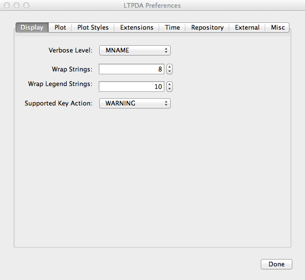

| LTPDA Toolbox™ | contents | |
Setting up MATLAB to work properly with the LTPDA Toolbox requires a few steps:
After downloading and un-compressing the LTPDA Toolbox, you should add the directory ltpda_toolbox to your MATLAB path. To do this:
To start using the LTPDA Toolbox, execute the following command on the MATLAB terminal:
ltpda_startupIf everything has gone well, you should be able to run a set of built-in tests by doing:
run_testsIn order to automatically start the LTPDA Toolbox when MATLAB starts up, add the command ltpda_startup to your own startup.m file. See >> doc startup for more details on installing and editing your own startup.m file.
It is necessary for the 'Search' in the LTPDA help section to build the documentation search database. Execute the following command on the MATLAB terminal
builddocsearchdb(utils.helper.getHelpPath)
utils.helper.buildSearchDatabase()The LTPDA Toolbox comes with a default set of starting preferences. These may need to be edited for your particular system (though most of the defaults should be fine). To edit the preferences, you first need to have the LTPDA toolbox installed as described above, then run the command
LTPDAprefs

Edit all the preferences you want and then click 'Apply' to save the preferences. These new preferences will be used each time you start LTPDA.
The 'Misc' tab allows to add user-defined units, such as 'bar', 'arcsec' and so on. Just type the string in the field 'New unit' and hit the '+' button.
The 'Misc' tab allows also to choose the default type of spectral window to be applied when using the Welch-based estimators. More info about each window can be obtained by using the spectral wind GUI, accessible via:
specwinViewer
| |
System Requirements | Additional 3rd-party software | |
©LTP Team